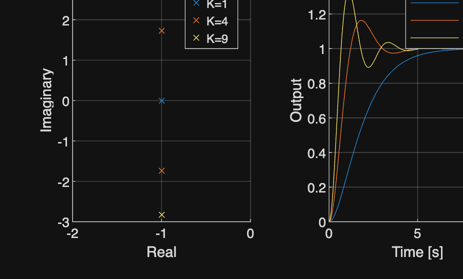
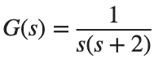

Root Locus · 학습
실행 조건
MATLAB · Control System Toolbox
이번에 배울 내용
Gain 하나를 고르는 문제가 Pole 위치와 Time Response에 어떻게 이어지는지 확인합니다.
전체 흐름
열린 고리 모델 → Gain 후보 → Closed-loop Pole → Time Response
Gain이 바뀔 때 Pole이 움직이는 경로
단위 Feedback의 Closed-loop Pole은 1+K L(s)=0의 근입니다. Root Locus는 K에 따라 그 근들이 이동하는 경로를 보여 줍니다.
K 하나를 고를 때는 그 K에 해당하는 모든 Pole을 함께 봅니다.
Pole 선택을 응답으로 확인하기
실수부가 양수인 Pole이 있으면 안정한 Step 지표를 계산할 수 없습니다. 안정한 후보라도 Zero·잔차·입력이 응답에 영향을 줍니다. Pole에서 예상한 감쇠·속도를 실제 곡선과 대조한 뒤 Gain을 선택합니다.
Gain으로 달라지는 Closed-loop Pole

에 를 적용합니다. Pole 지도와 Step 응답을 함께 봅니다.%% Worked example
s=tf('s'); G=1/(s*(s+2)); t=linspace(0,10,1001)';
figure; tiledlayout(1,2); ax1=nexttile; hold(ax1,'on'); ax2=nexttile; hold(ax2,'on');
for gain=[1 4 9]
T=feedback(gain*G,1); p=pole(T); [y,tm]=step(T,t);
plot(ax1,real(p),imag(p),'x','DisplayName',sprintf('K=%g',gain));
plot(ax2,tm,y,'DisplayName',sprintf('K=%g',gain));
end
xlabel(ax1,'Real'); ylabel(ax1,'Imaginary'); xlabel(ax2,'Time [s]'); ylabel(ax2,'Output');
grid(ax1,'on'); grid(ax2,'on'); legend(ax1); legend(ax2);
참고 예제
추가 예제 보기
참고 자료